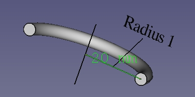

|
| Posizione nel menu |
|---|
| Parte → Primitive → Toro |
| Ambiente |
| Parte, OpenSCAD, Completo |
| Avvio veloce |
| Nessuno |
| Vedere anche |
| Parte → Crea primitive... → Toro |
Contents |
Descrizione
Crea un semplice toro parametrico, con i parametri position, angle1, angle2, angle3, radius1 e radius2.

Utilizzo
Nell'ambiente Parte cliccare sull'icona  . Il toro viene creato nell'origine, nel punto 0,0,0.
I parametri Angolo e i parametri Raggio permettono di parametrizzare il toro. Come descritto nel paragrafo successivo, i parametri Angolo consentono di creare una porzione di toro invece di un toro completo, di default sono impostati a 360°, e i parametri Raggio1 e Raggio2 definiscono rispettivamente la dimensione del foro e il diametro dell'anello del 'tubo'.
. Il toro viene creato nell'origine, nel punto 0,0,0.
I parametri Angolo e i parametri Raggio permettono di parametrizzare il toro. Come descritto nel paragrafo successivo, i parametri Angolo consentono di creare una porzione di toro invece di un toro completo, di default sono impostati a 360°, e i parametri Raggio1 e Raggio2 definiscono rispettivamente la dimensione del foro e il diametro dell'anello del 'tubo'.
Opzioni

Parametri
Un toro può essere assimilato ad un disco che compie un'orbita circolare attorno un'asse immaginario. Quindi il toro parametrico è definito dai seguenti parametri:
- Raggio1: Raggio del cerchio attorno al quale circola il disco. Distanza tra l'asse di rotazione, centro del toro, e il centro del disco.
- Raggio2: Raggio del disco che definisce la forma del toro
- Angolo1: 1° Angolo di taglio per definire il disco del toro
- Angolo2: 2° Angolo di taglio per definire il disco del toro
- Angolo3: 3° Angolo per definire la circonferenza del toro. Ampiezza della rotazione
nonché la serie standard di parametri di posizionamento. Le immagini sottostanti danno una rappresentazione grafica dei parametri citati:
 Il parametro Raggio1 ha il valore di 20 mm.
{kind=link}
 Il parametro Raggio2 ha il valore di 2 mm.
Il parametro Raggio2 ha il valore di 2 mm.
 Il parametro Angolo1 ha il valore di -90°. Notare che, lo strumento "di misura dell'angolo" non in grado di visualizzare l'angolo negativo. Considerare il valore visualizzato nell'immagine come "-90°".
Il parametro Angolo1 ha il valore di -90°. Notare che, lo strumento "di misura dell'angolo" non in grado di visualizzare l'angolo negativo. Considerare il valore visualizzato nell'immagine come "-90°".
 Il parametro Angolo2 ha il valore di 90°.
Il parametro Angolo2 ha il valore di 90°.
 Il parametro Angolo3 ha il valore di 90°.
Il parametro Angolo3 ha il valore di 90°.